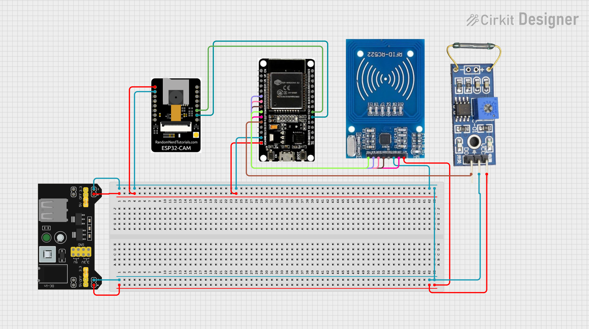

Arduino-based door alarm with RFID arming, reed switch trigger,
and ESP32-CAM photo capture
Project Overview
This project builds a simple security system using two ESP32
boards:
Main ESP32 Dev Board: Reads an RFID card for
arming/disarming, monitors a magnetic reed switch on a door, controls
status LEDs, and coordinates with the camera board.
ESP32-CAM Board: Listens for commands over UART.
When it receives "PHOTO", it takes three pictures, saves them to a
microSD card, and sends the last image back to the main board.
How it works:
User taps an authorized RFID card to arm the system (green LED
on).
If the door opens (reed switch triggers) while armed, the main board
sends a "PHOTO" command via UART to the CAM board.
The CAM board captures three photos, saves all to the SD card, and
streams the last photo back to the main board.
User taps the RFID card again to disarm (red LED on).
Why send the image back?: The image data received by
the main board is buffered in memory, ready for future expansion. For
example, you could add a cellular SIM module (like SIM800L) to text the
photo to a phone. This project builds the foundation for that
extension.
Key concepts for students: UART communication, SPI
for RFID, GPIO input/output, task scheduling on dual-core ESP32, SD card
file writing.
Power note: All logic signals (GPIO pins) on ESP32
boards operate at 3.3V. The RC522 RFID module and reed switch in this
project are powered at 3.3V. The ESP32-CAM is powered at 5V via its 5V
pin, but its GPIO pins remain 3.3V logic.
Wiring and Assembly

Power Rail Setup
Set up your breadboard with two separate power rails:
5V rail: Connect to the ESP32-CAM 5V pin and to the
anodes of the LEDs (through 220 ohm resistors).
3.3V rail: Connect to the ESP32 Dev Board 3.3V pin,
the RC522 VCC pin, and one side of the reed switch.
Connect all ground (GND) pins together: ESP32 Dev Board GND,
ESP32-CAM GND, RC522 GND, reed switch GND side, and power supply GND.
This common ground is essential for communication.
Important when flashing the main ESP32 via USB:
When the main ESP32 is connected to your computer via USB for code
upload, do NOT connect the external power supply's 5V VIN wire to the
breadboard. Keep only the GND connection intact. This prevents conflict
between USB power and the external supply. After uploading code, you can
reconnect the VIN wire for normal operation with external power.
Pin Connections
Main ESP32 Dev Board
Connections
Main ESP32 Pin
Connects To
Notes
3.3V
RC522 VCC, one side of reed switch
All logic at 3.3V
GND
RC522 GND, reed switch other side, ESP32-CAM GND, LED cathodes
Common ground
GPIO 14
Reed switch signal side
Configured as INPUT in code
GPIO 19
Green LED anode (via 220 ohm resistor)
Cathode to GND
GPIO 18
Red LED anode (via 220 ohm resistor)
Cathode to GND
GPIO 17 (TX2)
ESP32-CAM GPIO 3 (U0RXD)
UART2 transmit to CAM receive
GPIO 16 (RX2)
ESP32-CAM GPIO 1 (U0TXD)
UART2 receive from CAM transmit
GPIO 26
RC522 SDA (MOSI)
SPI data
GPIO 32
RC522 SCK
SPI clock
GPIO 33
RC522 MOSI
SPI master out
GPIO 25
RC522 MISO
SPI master in
GPIO 27
RC522 RST
Reset pin
ESP32-CAM UART Pin Reference
The AI Thinker ESP32-CAM has two pins labeled U0RXD
and U0TXD located just above the GND pin on the board
edge. These correspond to:
U0RXD = GPIO 3 (receive pin for UART0)
U0TXD = GPIO 1 (transmit pin for UART0)
Connect these to the main board as shown in the table above.
Double-check this cross-connection: TX on one board must go to RX on the
other.
ESP32-CAM Flashing
Setup (CP2102 Adapter)
[INSERT DIAGRAM: CP2102 to ESP32-CAM wiring]
CP2102 Pin
ESP32-CAM Pin
Purpose
3.3V
3.3V
Power during flash only (do not use 5V)
GND
GND
Common ground
TX
GPIO 1 (U0TXD)
Data to CAM receive pin
RX
GPIO 3 (U0RXD)
Data from CAM transmit pin
GND
GPIO 0
Hold LOW to enter flash mode
Flashing steps:
Wire the CP2102 adapter as shown above, ensuring GPIO 0 is connected
to GND.
In Arduino IDE, select Board: "AI Thinker ESP32-CAM".
Upload the cam_board.ino sketch.
Critical: After upload completes, REMOVE the wire
connecting GPIO 0 to GND. Then press the ESP32-CAM's EN/RST button to
restart.
Open Serial Monitor at 115200 baud. You should see "CAM_READY".
Why remove the GPIO 0 wire?: GPIO 0 determines the
ESP32-CAM's boot mode. When grounded during power-up, the chip enters
flash mode and will not run your code. For normal operation, GPIO 0 must
be floating (unconnected) or pulled high.
Most new microSD cards of 32GB or smaller come pre-formatted as
FAT32 from the manufacturer. If your card is new and 32GB, you likely do
not need to reformat it.
If you encounter SD card initialization errors, format the card as
FAT32 using the SD
Memory Card Formatter.
Insert the card into the ESP32-CAM slot before powering on the
board.
Photos will be saved with filenames like /photo_1.jpg,
/photo_2.jpg, etc.
Note on Boot Sequence and
CAM_READY
The main board waits up to 25 seconds after startup to receive a
"CAM_READY" message from the ESP32-CAM. If you power on or flash the CAM
board separately before connecting it to the main board, the main board
will not see that initial CAM_READY message. This is expected and not a
problem. When both boards are powered together in the final setup, the
handshake will work correctly. If you test the CAM board alone first,
you can verify it outputs "CAM_READY" to its own Serial Monitor.
Software Setup
Step 1:
Install Arduino IDE and ESP32 Board Support
Option A: Separate project folders (recommended for
clarity)
Create a folder named ESP32_Security_Main.
Inside it, create a file named main_board.ino and paste
the main board code.
Create a second folder named ESP32_Security_CAM.
Inside it, create a file named cam_board.ino and paste
the CAM board code.
Open each folder separately in Arduino IDE when uploading to the
corresponding board.
Option B: Single folder with multiple .ino files
Create a folder named ESP32_Security_Project.
Inside it, create two files: main_board.ino and
cam_board.ino.
When you open main_board.ino in Arduino IDE, the IDE
will treat it as the active sketch. Upload to the main board.
Then open cam_board.ino in Arduino IDE (File > Open)
and upload to the CAM board.
Important: Arduino IDE only uploads the file that
matches the folder name (or the file you have open as the main sketch).
Always verify which .ino file is active before clicking Upload.
Configuring main_board.ino
Open main_board.ino in Arduino IDE.
Find your RFID card's UID:
Upload the code temporarily without changes.
Open Serial Monitor at 115200 baud.
Tap your authorized RFID card near the reader.
Note the printed UID (e.g., F9 49 B0 05).
Stop the upload, then edit the authorizedUID array to match your
card:
byte authorizedUID[4]={0xF9,0x49,0xB0,0x05};// Replace with YOUR UID bytes
Connect the main ESP32 Dev Board to your computer via USB
cable.
In Arduino IDE, configure:
Board: "ESP32 Dev Module"
Port: [Select your COM port]
Upload Speed: default or 115200
Critical: Ensure the external power supply's 5V VIN
wire is disconnected from the breadboard (keep GND connected).
Click the Upload button.
After upload completes, reconnect the VIN wire to restore full power
from the external supply.
Step 5: Upload
to ESP32-CAM Using CP2102 Adapter
Wire the CP2102 adapter to the ESP32-CAM as described in the Wiring
section.
In Arduino IDE, configure:
Board: "AI Thinker ESP32-CAM"
Port: [Select the CP2102 COM port]
Ensure GPIO 0 is grounded during upload
Click Upload.
After upload:
Remove the wire connecting GPIO 0 to GND.
Press the ESP32-CAM's EN/RST button to restart.
Open Serial Monitor at 115200 baud. You should see "CAM_READY".
Step 6: Final System Check
Power both boards using the external power supply (ensure all wires
are reconnected, including the VIN wire to the main ESP32).
Observe the LEDs on the main board:
Red LED should be ON initially (system starts disarmed)
Green LED should be OFF initially
Test arming: Tap the authorized RFID card near the
reader. The green LED should turn ON and the red LED should turn OFF,
indicating the system is armed.
Test the alarm: While armed, separate the reed
switch contacts (simulate opening a door). You should observe:
The ESP32-CAM's onboard LED may flash briefly during photo
capture
After a few seconds, the system returns to monitoring state
Test disarming: Tap the authorized RFID card again.
The red LED should turn ON and the green LED should turn OFF.
Verify photos were saved: Power down the system,
remove the microSD card from the ESP32-CAM, and insert it into a
computer. Open the photo_*.jpg files to confirm images were
captured.
Optional: Serial Monitor verification If you want to
see debug output during testing:
Keep the main ESP32 connected to USB in addition to the
external power supply
Ensure the external 5V VIN wire is disconnected from the breadboard
while USB is connected (to avoid power conflict)
Open Serial Monitor at 115200 baud to view status messages
When finished monitoring, disconnect USB and reconnect the VIN wire
for standalone operation
Testing and Operation
Arm the system: Tap the authorized RFID card near
the reader. The green LED should turn on, and the Serial Monitor should
display "System armed via RFID".
Trigger the alarm: Open the door (separate the reed
switch contacts). Observe:
Serial Monitor shows:
*** ALARM TRIGGERED: Door Opened ***
The ESP32-CAM saves three photos to the SD card
(/photo_1.jpg, /photo_2.jpg,
/photo_3.jpg)
The last photo is streamed back to the main board and buffered in
memory
Disarm the system: Tap the authorized RFID card
again. The red LED should turn on, and the Serial Monitor should display
"System disarmed via RFID".
View captured photos: Power down the system, remove
the microSD card from the ESP32-CAM, and insert it into a computer. Open
the photo_*.jpg files with any image viewer.
Troubleshooting
CAM board
not responding or "CAM did not report ready"
Check UART wiring: Verify that Main GPIO 17
connects to CAM GPIO 3 (U0RXD), and Main GPIO 16 connects to CAM GPIO 1
(U0TXD). TX must go to RX.
Check common ground: Ensure all GND pins are
connected together.
Check CAM power: The ESP32-CAM 5V pin must be
connected to the 5V rail. During normal operation, GPIO 0 should not be
grounded.
Check Serial Monitor baud rate: Both boards use
115200 baud. Ensure your monitor is set correctly.
Re-flash the CAM board: Follow the flashing steps
again, ensuring GPIO 0 is grounded only during upload and removed
afterward.
RFID card not detected
Check SPI wiring: Verify connections for SDA, SCK,
MOSI, MISO, RST, and GND between the main ESP32 and RC522.
Check RC522 power: The module VCC should be
connected to 3.3V (not 5V) as confirmed in your build.
Check antenna orientation: Hold the RFID card flat
against the reader module for best results.
Verify UID in code: Ensure the
authorizedUID array in main_board.ino exactly
matches your card's printed UID bytes.
SD card write errors on
ESP32-CAM
Check card format: Most new 32GB cards come
pre-formatted as FAT32. If you get errors, reformat using the official
SD Memory Card Formatter tool.
Check card insertion: Ensure the microSD card is
fully seated in the slot.
Check card capacity: The project was tested with a
32GB card. Larger cards may require additional configuration.
Power stability: The ESP32-CAM draws significant
current during photo capture. Ensure your 5V supply can provide at least
500mA.
Photos not streaming
back to main board
Check UART buffer settings: The main board code
sets Serial2.setRxBufferSize(2048). Do not change this
unless you also adjust the receive logic.
Check for interference: Keep UART wires short and
away from high-current paths.
Verify protocol timing: The CAM board sends
"IMG:" followed by raw bytes and "IMG_END". Ensure no extra serial
output is interfering.
LEDs not lighting correctly
Check resistor orientation: LEDs are polarized. The
longer leg (anode) connects to the GPIO pin through the resistor; the
shorter leg (cathode) connects to GND.
Check GPIO definitions: Verify that
LED_GREEN and LED_RED in the code match your
physical wiring (GPIO 19 and 18 by default).
Check power rail: LED anodes should connect to the
5V rail through resistors; cathodes to GND.
General upload issues
ESP32 Dev Board not detected: Try a different USB
cable. Some cables are power-only.
ESP32-CAM upload fails: Ensure GPIO 0 is grounded
during upload, and that you have selected "AI Thinker ESP32-CAM" as the
board. Remember to remove the GPIO 0 ground wire after upload.
Estimated build time: 2-3 lab sessions for freshman
students.
Key learning objectives: UART communication, SPI
protocol, GPIO configuration, task scheduling on dual-core
microcontrollers, file system operations.
Common student pitfalls: Reversing UART TX/RX
connections, forgetting common ground, incorrect RFID UID entry, leaving
GPIO 0 grounded on ESP32-CAM after flashing.
Extension ideas: Add a cellular SIM module (e.g.,
SIM800L) to text the buffered photo to a phone, implement a keypad for
PIN-based arming, add a buzzer for audible alarm.